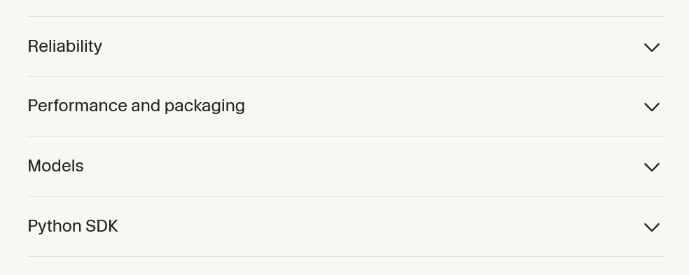
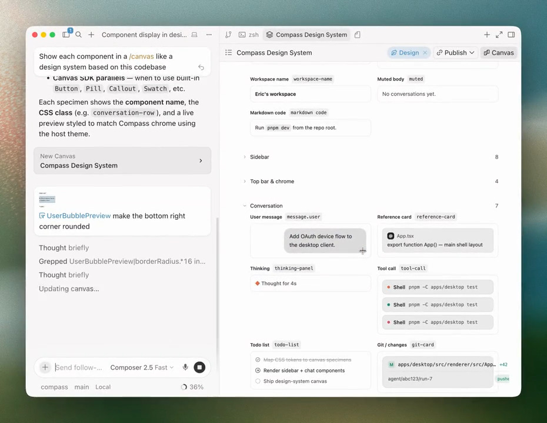
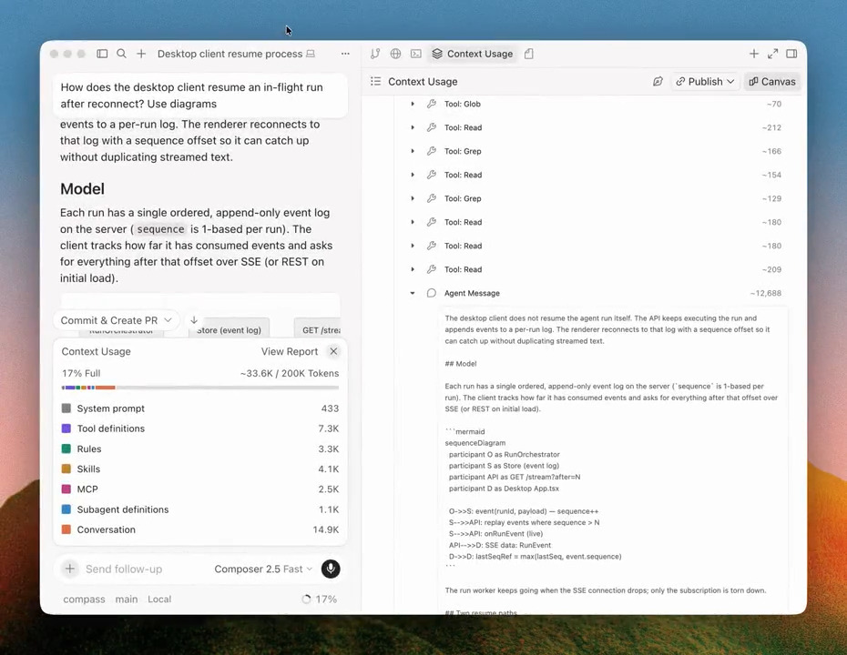
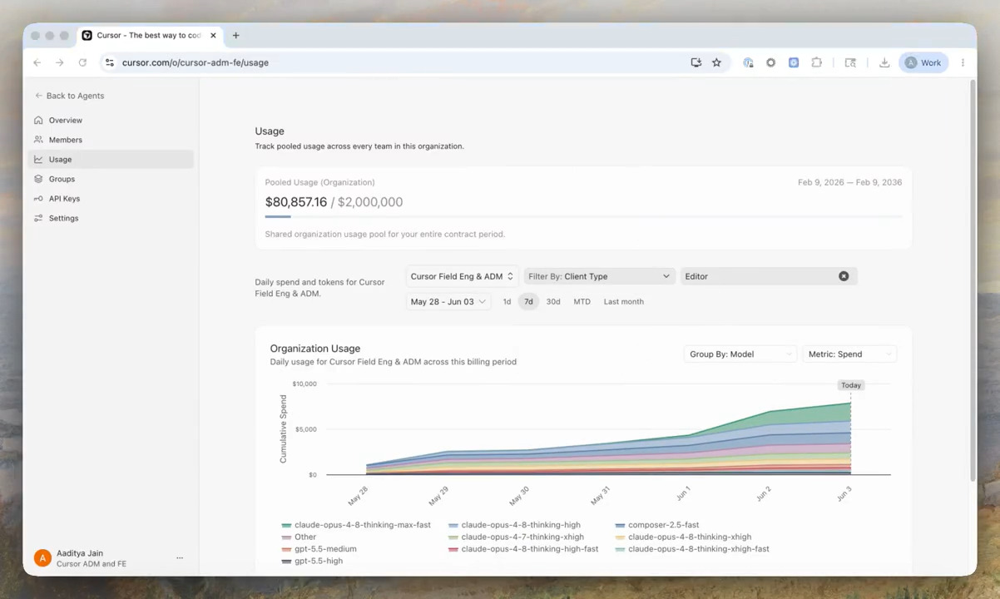
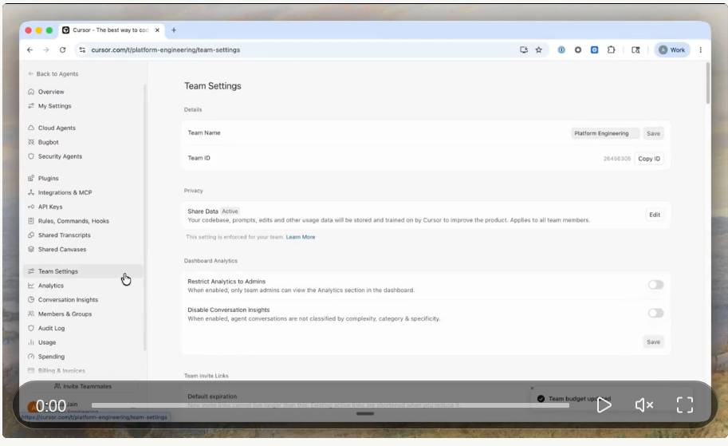
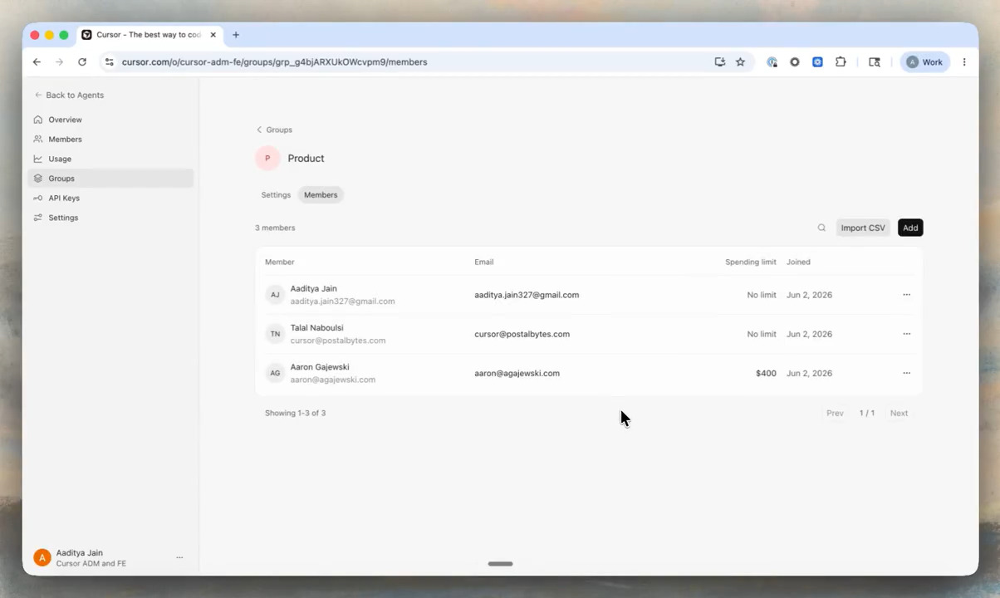

Jun 4, 2026
· Changelog
Custom stores, custom tools, and auto-review for the Cursor SDK
We've shipped a batch of new functionality across the TypeScript and Python SDKs. You can now choose how agent and run metadata is persisted, expose your own functions to the agent as tools, route local tool calls through auto-review, and nest subagents to any depth. This release also brings a set of reliability, performance, and platform fixes that make local and cloud SDK agents easier to run in production scripts, CI, and custom integrations.
Custom tools
You can now hand the local agent your own tools by passing function definitions through local.customTools, on Agent.create() or per send(). The SDK exposes them to the agent through a built-in MCP server called custom-user-tools, so the model calls your code through the same path and the same permission gate as any other MCP tool.
Before this, exposing a custom capability meant standing up your own stdio or remote HTTP MCP server and wiring it into the agent. Now a function definition is enough. Custom tools are also visible to every subagent of a parent agent, so a tool you define once is available throughout the whole run.
Auto-review
By default, a local SDK agent runs tool calls without asking for approval, since there's no human in the loop in a headless run. Set local.autoReview to route those calls through auto-review instead. A classifier decides which calls run automatically and which to hold back, rather than bypassing review entirely.
You steer that classifier with natural-language instructions in permissions.json. The autoRun.allow_instructions field describes call shapes to lean toward allowing, and autoRun.block_instructions describes the ones to hold for review. For example, you can allow read-only inspections of build artifacts while always pausing on destructive operations like deletes.

JSONL and costom stores
Both SDKs persist agent and run metadata so you can resume an agent after a process restart. Until now, that store was SQLite. You can now opt into a JSONL store instead, which writes a plain, append-only file you can read, diff, and check into version control. Both SqliteLocalAgentStore and JsonlLocalAgentStore are exported directly.
If neither default fits your setup, implement the public LocalAgentStore interface and pass it through local.store. Build an in-memory store for ephemeral CI runs, or back persistence with Postgres when you want agent state to live next to the rest of your application data. The Python SDK exposes host, JSONL, and composed JSONL stores through the bridge.
Nested subagent
Subagents can now spawn their own subagents, and so on. A reviewer subagent can delegate to a test-writer, which can delegate further, with each level keeping its own prompt and model. There's nothing to turn on; a subagent session registers the executor it needs to call Task, so nesting works automatically for any agent that defines subagents.
Reliability, performance, and platform improvements
This release also includes a batch of quality-of-life fixes across both SDKs.

Run npm install @cursor/sdk or pip install cursor-sdk to upgrade. Scripts pinning composer-2 move to Composer 2.5 automatically, and requestId is a safe addition to your run metadata schema. See the TypeScript and Python docs for full details.
3.7 Jun 4, 2026
Canvas Design Mode and Context Usage Report
With canvases, agents can create interactive artifacts like dashboards, reports, and internal tools that you can share with your team.This release introduces Design Mode for faster canvas editing, new ways to understand context usage, and other quality-of-life improvements.
Design Mode in canvases
Design Mode is now available in canvases.Select and annotate UI elements directly in a canvas to guide Cursor's edits, just as you would in the browser. Instead of describing the change in text, you can point to it, provide feedback, and iterate more quickly.

Context usage report in canvas
Cursor can now show your agent's context usage as an interactive report in a canvas.
The context explorer breaks down where tokens go across the system prompt, tool definitions, rules, skills, and more. Because it's a canvas, you can ask the agent follow-up questions, and it can customize the report to answer your specific questions.
Click the Debug with Agent button embedded in the canvas to ask Cursor to identify opportunities to reduce context usage in a new conversation.

Canvas Improvements (4)
- Shared canvases can now be opened full-screen in the browser, making them easier to present to others.
- Added the ability for agents to embed buttons in canvases that will run a specific prompt when clicked.
- Improved the agent's ability to fix canvas type errors.
- Improved component styling, and added more chart customization functionality.
Jun 3, 2026
Organizations for Cursor Enterprise
Enterprise customers can now manage multiple Cursor teams from one place, with different security, governance, budget, and feature controls for each. These capabilities are now generally available to all Enterprise customers.

Organizations
An organization is the top-level container for your company's identity, administration, and membership. It gives admins one place to view and manage their entire Cursor setup, including a rollup of spend and token usage across every team.

Teams
Teams are the operating unit for a department, region, or subsidiary. This is what admins manage as their Cursor org today. We've moved that unit under an organization, so you can run multiple teams, each with its own security, governance, spend, and feature settings.
A user can belong to more than one team, with a different role in each. For current customers, your existing team is preserved and becomes the default home for login, routing, and creating new teams.

Groups
Groups are a lightweight collection of users that can sit across or within teams. They give cohorts of users separate model access, spend limits, and agent permissions without standing up a whole new team. When a user belongs to more than one team or group, the most permissive setting wins.

Learn more in our announcement post or docs
Improvements (5)
- Multi-team support so users can be on multiple teams at once
- Organization-level IDP management.
- Organization-level usage analytics, with drill downs to each team.
- Admins can move users between teams through the dashboard, API, or CSV.
- New users joining a team inherit settings and permissions automatically